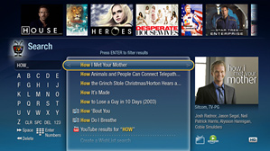

TiVo is taking a big step with its brand new TiVo Premiere. The Series 4 set-top box, officially unveiled this week, brings a refreshed design and host of added features to the decade-old DVR
system.
TiVo Premiere boasts an HD-ready interface, up to 150 hours of HD-quality storage, and an optional souped-up remote complete with slide-out QWERTY keyboard. Most noteworthy,
however, may be the Premiere's new Internet integration and seamless access to all kinds of multimedia content.
For a company like Blockbuster, that change could make a significant
difference.
TiVo Premiere: Cross-Platform Search
TiVo bills the Premiere as "the one box," and it's not hard to see why. The Series 4 device effortlessly integrates broadcast TV with the Web and various movie-streaming services, adding powerful global search options that tie everything together. For example, say you're searching for the movie Office Space. All you'd do is type the name into a search field, and TiVo Premiere would show you all the results across multiple platforms (no TPS report required). You might get a listing for an upcoming showing on a cable channel, a list of outtakes or behind-the-scenes footage on YouTube, and an option to rent the movie from an on-demand service of your choice.  That's where the benefit for Blockbuster comes in. The company, as you may have read, recently reported a $435 million loss for its fourth quarter. More store closings are now in the cards, and some analysts are starting to question the one-time giant's viability for the future. Blockbuster's been available on certain TiVo models for a while now. But with the Premiere's new integrated cross-platform search, its offerings are more up front and center than ever -- and that means new opportunities for business.